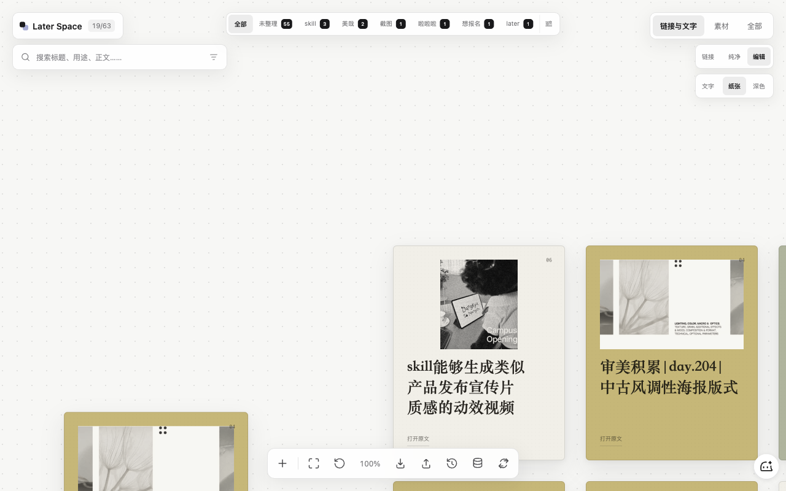
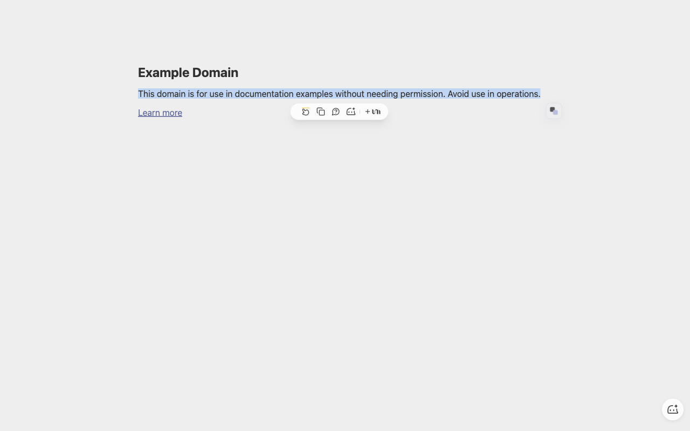

01 / LATER SPACE UPDATE
Later Space 本身的优化
默认分层、长文字卡片化，以及资讯和视觉素材的不同入口。
一个浏览器插件的使用场景
以及它为什么这样设计。
先看 Later Space 最近做的几处小优化，再用真实案例演示我做的插件如何收藏网页、文字、图片和视频。
默认分层、长文字卡片化，以及资讯和视觉素材的不同入口。
从正在浏览的网页里，直接收藏整页、选区、图片或视频。
不是增加更多功能，而是让最常用的资讯先被看见，让素材在需要的时候再出现。
默认入口不再把图片、视频和资讯全部混在一起。最常用的阅读内容先出现，视觉素材留在 Visual Space。

长文字先自动截取临时标题，和链接一样成为一个清楚的信息源。第一期不依赖 AI，也不需要 API key。
从复制粘贴开始，Later Space 先帮你把它变成一个可以辨认的入口。
收藏不必先离开内容。插件把动作放回网页、文字、图片和视频出现的地方。
不用复制网址，也不用先打开 Later Space。插件自动读取当前页面的标题和链接，保存后给出明确反馈。
点击浏览器右上角的 Later Space 图标，保存当前页面。
插件不要求你先判断“收藏文字”还是“收藏网页”。你只需要选中内容，完成选区后再点击一次。

在小红书、X 或图片搜索里，不必先截图再粘贴。悬停图片或视频封面，或者右键使用统一入口。
悬停素材，选择 加入 Later Space。
收藏不是点击按钮就结束。用户需要看见最近内容、知道它在哪里，也需要在误触时能退回来。
Later Space Collector 想做的，不是增加一个收藏工具，而是让“稍后再看”发生得更自然。